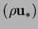
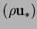

For steady-state laminar flow, the equation for the continuity of the mixture
is (Bird et al. 1960, p. 556):
The mass flux of vapour with respect to a frame of reference fixed in space is
(Bird et al. 1960, p. 561):
Considering only Fickian diffusion (Bird et al. 1960, p. 502; see also
`Omissions', below),
For steady-state vapour transport in a laminar flow, with no destruction or
creation of vapour (see `Omissions', below), conservation of
vapour requires that its flux (2.4) is solenoidal
(Bird et al. 1960, p. 561); i.e.
If the spatial variations of  and
and  are neglected in the mass fluxes
 and
are neglected in the mass fluxes
 and  , the equations of continuity reduce to
, the equations of continuity reduce to
It is obvious from (2.7)
that the velocity field,  , must be known
for the distribution of vapour to be calculable.
To this end, an equation of motion is obtained in §2.1.2.
, must be known
for the distribution of vapour to be calculable.
To this end, an equation of motion is obtained in §2.1.2.